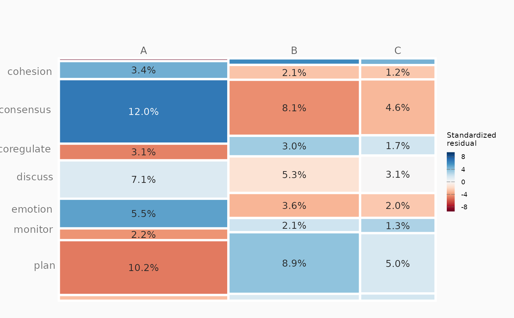

Two-variable mosaic analysis (chi-square test + flat mosaic)
Source:R/mosaic_analysis.R
mosaic_analysis.RdAnalyses the association between two categorical columns of a data.frame.
Builds the contingency table, drops sparse categories below
min_count, runs a Pearson chi-square test (or Fisher's exact test),
computes Cramer's V with a df-adjusted effect-size label, and draws a flat
ggplot2 mosaic whose tile area encodes counts and whose fill encodes the
standardized Pearson residual (Nestimate diverging palette). All tabular
output is a tidy one-row-per-cell data.frame.
Arguments
- data
A data.frame containing the two variables.
- var1
Character. Name of the first variable (mosaic columns).
- var2
Character. Name of the second variable (stacked within columns).
- min_count
Integer. Minimum marginal count for a category to be kept. Categories of either variable below this are dropped before testing. Default 10.
- test
Character.
"chisq"(default) Pearson chi-square, or"fisher"Fisher's exact test (simulated p-value). Cramer's V and the residual fill are always derived from the chi-square statistic.- percentage_base
Character. Base for the
"percent"tile label and thepctcolumn:"total"(default),"row"(withinvar1), or"column"(withinvar2).- tile_label
Character. What to print inside each tile:
"count"(default),"percent","residual","category"(var2level), or"none".- title
Character. Plot title. Default
"".- ...
Further flat-mosaic styling arguments passed to the renderer (e.g.
col_label_side,row_label_side,legend_position,legend_size,label_size,palette). Tile fill uses the ColorBrewer RdBu ramp by default (override withpalette). Column labels auto-rotate to vertical when there are more than 6 columns; passcol_label_angleto force an angle.
Value
An object of class "mosaic_analysis": a list with
- plot
The flat mosaic
ggplotobject.- counts
Tidy data.frame, one row per (var1, var2) cell, with
observed,expected,residual(standardized), andpct(onpercentage_base).- stats
One-row data.frame:
test,statistic,df,p_value,cramers_v,effect_size,n.- test
The raw
htestobject.- cramers_v, effect_size
Effect size value and label.
- table
The filtered contingency
table.- removed
List of dropped
var1/var2categories.- n_original, n_filtered
Row counts before/after filtering.
See also
mosaic_plot for the network/table mosaic (which also
accepts style = "flat").
Examples
df <- data.frame(
gender = sample(c("F", "M"), 200, replace = TRUE),
level = sample(c("Low", "Mid", "High"), 200, replace = TRUE)
)
res <- mosaic_analysis(df, "gender", "level", min_count = 5)
res$stats
#> test statistic df p_value cramers_v effect_size n
#> 1 Chi-square 0.848 2 0.6545 0.065 negligible 200
res$counts
#> gender level observed expected residual pct
#> 1 F High 33 30.030 0.897 16.5
#> 2 M High 33 35.970 -0.897 16.5
#> 3 F Low 31 33.215 -0.653 15.5
#> 4 M Low 42 39.785 0.653 21.0
#> 5 F Mid 27 27.755 -0.233 13.5
#> 6 M Mid 34 33.245 0.233 17.0
# \donttest{
plot(res, tile_label = "percent")

# }